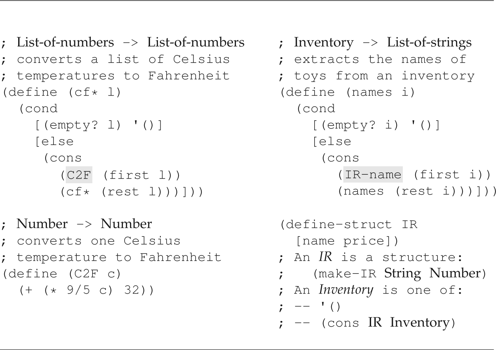
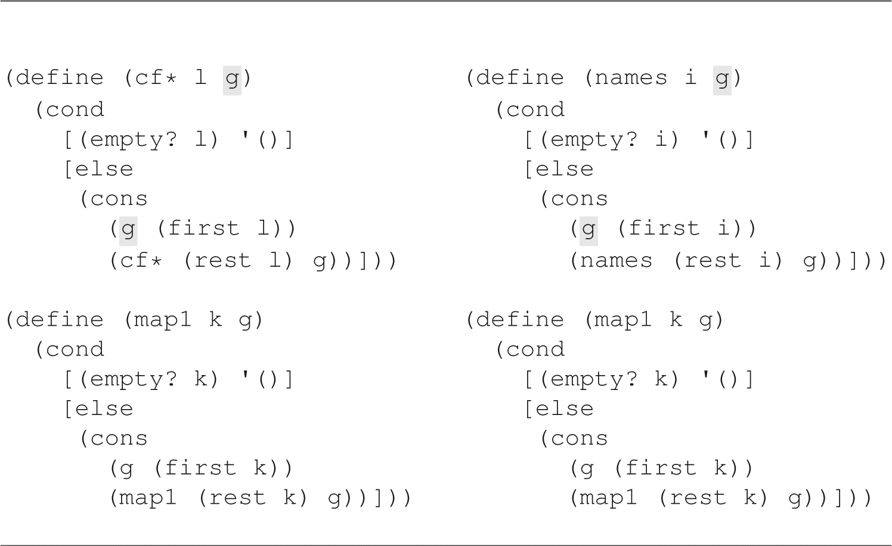
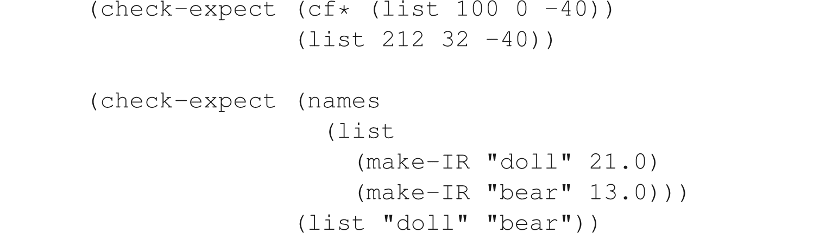
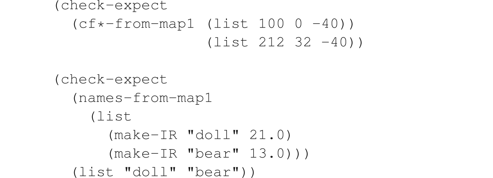
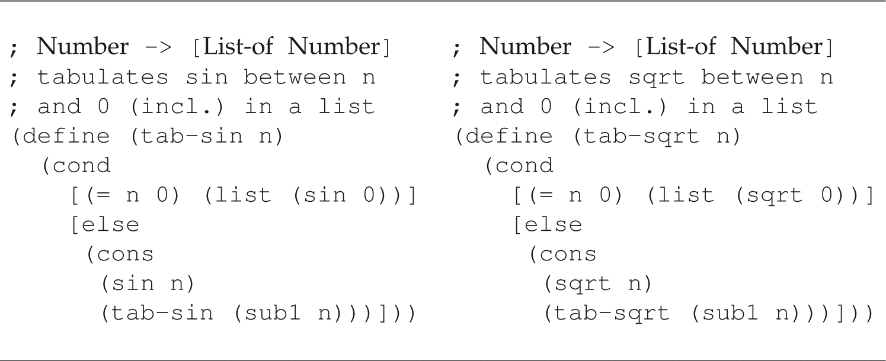
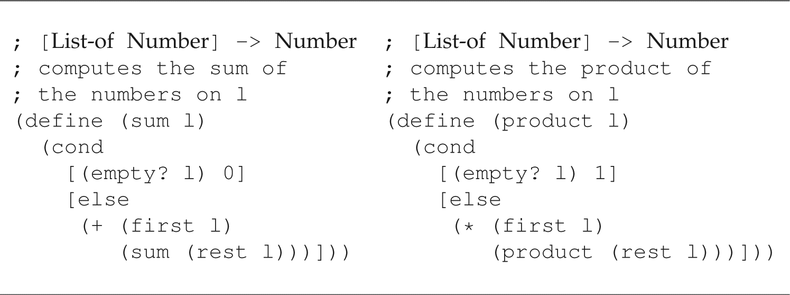
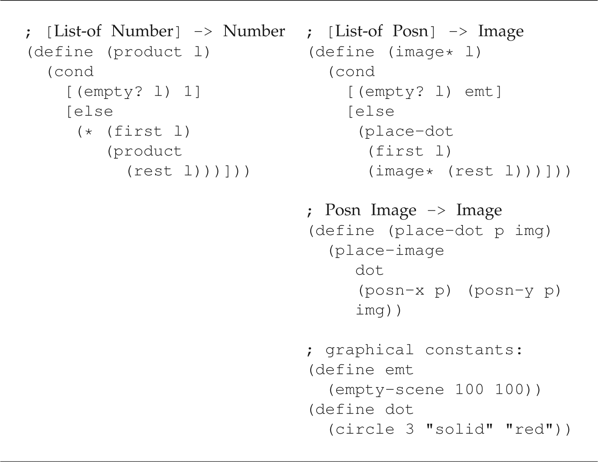

15.1 Abstractions from Examples
When you first learned to add, you worked with concrete examples. Your parents probably taught you to use your fingers to add two small numbers. Later on, you studied how to add two arbitrary numbers; you were introduced to your first kind of abstraction. Much later still, you learned to formulate expressions that convert temperatures from Celsius to Fahrenheit or calculate the distance that a car travels at a given speed and amount of time. In short, you went from very concrete examples to abstract relations.
This section introduces a design recipe for creating abstractions from examples. As the preceding section shows, creating abstractions is easy. We leave the difficult part to the next section where we show you how to find and use existing abstractions.
Recall the essence of chapter 14. We start from two concrete definitions; we compare them; we mark the differences; and then we abstract. And that is mostly all there is to creating abstractions:
1. Step 1 is to compare two items for similarities.
When you find two function definitions that are almost the same except for their names and some values at analogous places, compare them and mark the differences. If the two definitions differ in more than one place, connect the corresponding differences with a line.
The recipe requires a substantial modification for abstracting over non-values.
Figure 90 shows a pair of similar function definitions. The two functions apply a function to each item in a list. They differ only as to which function they apply to each item. The two highlights emphasize this essential difference. They also differ in two inessential ways: the names of the functions and the names of the parameters.

Figure 90: A pair of similar functions
2. Next we abstract. To abstract means to replace the contents of corresponding code highlights with new names and add these names to the parameter list. For our running example, we obtain the following pair of functions after replacing the differences with g; see figure 91. This first change eliminates the essential difference. Now each function traverses a list and applies some given function to each item.

Figure 91: The same two similar functions, abstracted
The inessential differences—the names of the functions and occasionally the names of some parameters—are easy to eliminate. Indeed, if you have explored DrRacket, you know that check syntax allows you to do this systematically and easily; see bottom of figure 91. We choose to use map1 for the name of the function and k for the name of the list parameter. No matter which names you choose, the result is two identical function definitions.
Our example is simple. In many cases, you will find that there is more than just one pair of differences. The key is to find pairs of differences. When you mark up the differences with paper and pencil, connect related boxes with a line. Then introduce one additional parameter per line. And don’t forget to change all recursive uses of the function so that the additional parameters go along for the ride.
3. Now we must validate that the new function is a correct abstraction of the original pair of functions. To validate means to test, which here means to define the two original functions in terms of the abstraction.
Thus suppose that one original function is called f-original and consumes one argument and that the abstract function is called abstract. If f-original differs from the other concrete function in the use of one value, say, val, the following function definition
(define (f-from-abstract x)
(abstract x val))
introduces the function f-from-abstract, which should be equivalent to f-original. That is, (f-from-abstract V) should produce the same answer as (f-original V) for every proper value V. In particular, it must hold for all values that your tests for f-original use. So reformulate and rerun those tests for f-from-abstract and make sure they succeed.
Let’s return to our running example:
; List-of-numbers -> List-of-numbers
(define (cf*-from-map1 l) (map1 l C2F))
; Inventory -> List-of-strings
(define (names-from-map1 i) (map1 i IR-name))
A complete example would include some tests, and thus we can assume that both cf* and names come with some tests:

To ensure that the functions defined in terms of map1 work properly, you can copy the tests and change the function names appropriately:

4. A new abstraction needs a signature, because, as chapter 16 explains, the reuse of abstractions starts with their signatures. Finding useful signatures is a serious problem. For now we use the running example to illustrate the difficulty; chapter 15.2 resolves the issue.
Consider the problem of map1’s signature. On the one hand, if you view map1 as an abstraction of cf*, you might think it is
; List-of-numbers [Number -> Number] -> List-of-numbers
that is, the original signature extended with one part for functions:
; [Number -> Number]
Since the additional parameter for map1 is a function, the use of a function signature to describe it should not surprise you. This function signature is also quite simple; it is a “name” for all the functions from numbers to numbers. Here C2F is such a function, and so are add1, sin, and imag-part.
On the other hand, if you view map1 as an abstraction of names, the signature is quite different:
; Inventory [IR -> String] -> List-of-strings
This time the additional parameter is IR-name, which is a selector function that consumes IRs and produces Strings. But clearly this second signature would be useless in the first case, and vice versa. To accommodate both cases, the signature for map1 must express that Number, IR, and String are coincidental.
Also concerning signatures, you are probably eager to use List-of by now. It is clearly easier to write [List-of IR] than spelling out a data definition for Inventory. So yes, as of now, we use List-of when it is all about lists, and you should too.
Once you have abstracted two functions, you should check whether there are other uses for the abstract function. If so, the abstraction is truly useful. Consider map1, for example. It is easy to see how to use it to add 1 to each number on a list of numbers:
; List-of-numbers -> List-of-numbers
(define (add1-to-each l)
(map1 l add1))
Similarly, map1 can also be used to extract the price of each item in an inventory. When you can imagine many such uses for a new abstraction, add it to a library of useful functions to have around. Of course, it is quite likely that someone else has thought of it and the function is already a part of the language. For a function like map1, see chapter 16.
Exercise 250. Design tabulate, which is the abstraction of the two functions in figure 92. When tabulate is properly designed, use it to define a tabulation function for sqr and tan. 

Figure 92: The similar functions for exercise 250
Exercise 251. Design fold1, which is the abstraction of the two functions in figure 93.

Figure 93: The similar functions for exercise 251
Exercise 252. Design fold2, which is the abstraction of the two functions in figure 94. Compare this exercise with exercise 251. Even though both involve the product function, this exercise poses an additional challenge because the second function, image*, consumes a list of Posns and produces an Image. Still, the solution is within reach of the material in this section, and it is especially worth comparing the solution with the one to the preceding exercise. The comparison yields interesting insights into abstract signatures.

Figure 94: The similar functions for exercise 252
Lastly, when you are dealing with data definitions, the abstraction process proceeds in an analogous manner. The extra parameters to data definitions stand for collections of values, and testing means spelling out a data definition for some concrete examples. All in all, abstracting over data definitions tends to be easier than abstracting over functions, and so we leave it to you to adapt the design recipe appropriately.